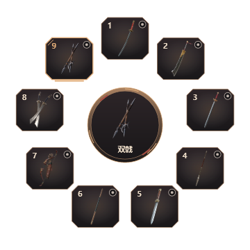
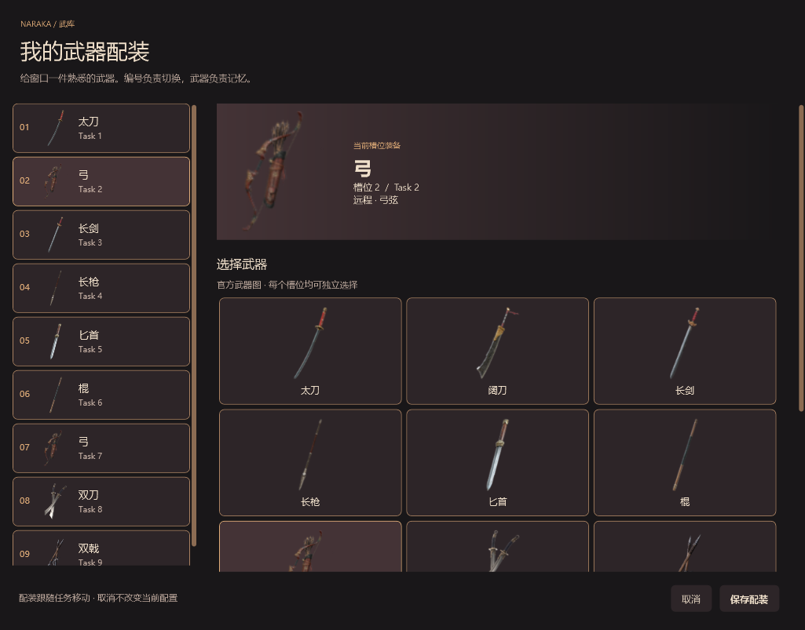
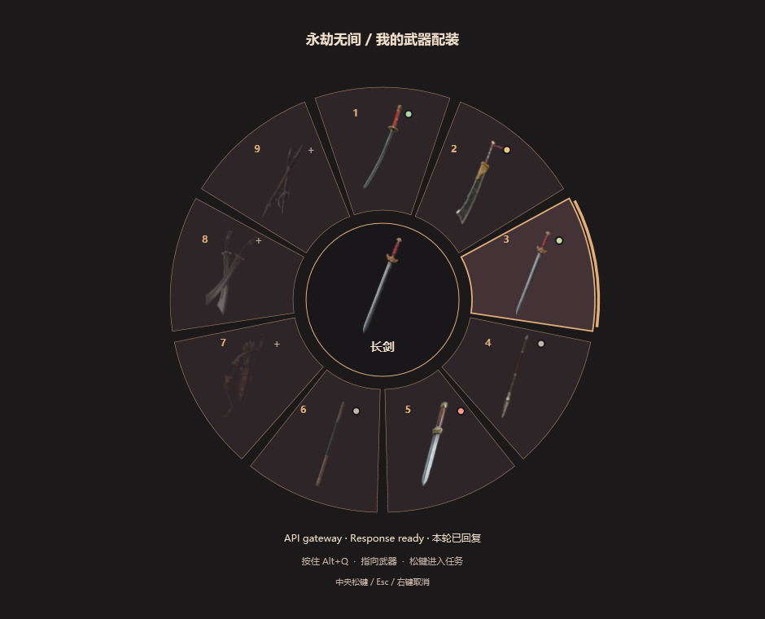
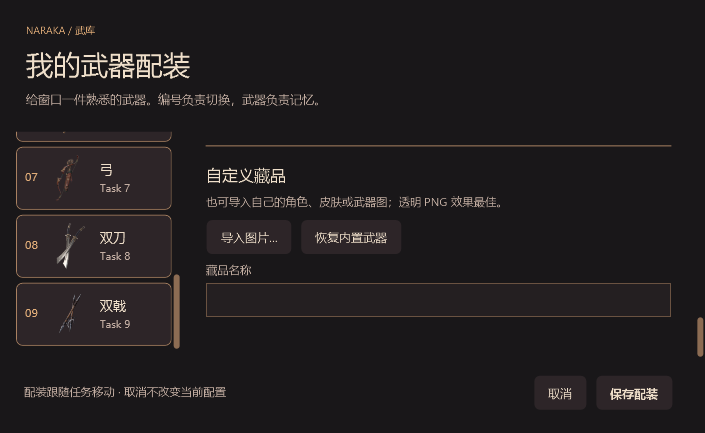

当前武器 + 名称
不再显示终端首字

中心是一件当前装备，周围是九个固定位置。把终端放进你熟悉的太刀、阔刀或弓的位置，凭轮廓找任务。任务名、项目和 AI 状态留在悬停详情与任务总览中。
当前武器 + 名称
不再显示终端首字

以下是分别装备九件武器时的实际常驻圆环。素材来自官方武器指南，保留原有颜色与轮廓。
右键槽位 →「更换武器 / 配装…」。选择内置武器，或导入自己的角色、皮肤和武器图。按「保存配装」后生效；取消保留原配置。


指向武器后，底部显示对应任务和状态。原有快捷键保持不变。

内容可滚动，保存和取消始终固定在底部。导入图片复制到配置目录，任务重排与重启后仍保留配装。
原生 WPF 渲染，任务为验证样例。仅永劫无间主题已切换为这套展示。其他游戏内置藏品后续制作；当前可先导入自己的图片。操作说明与素材来源 · 验证摘要